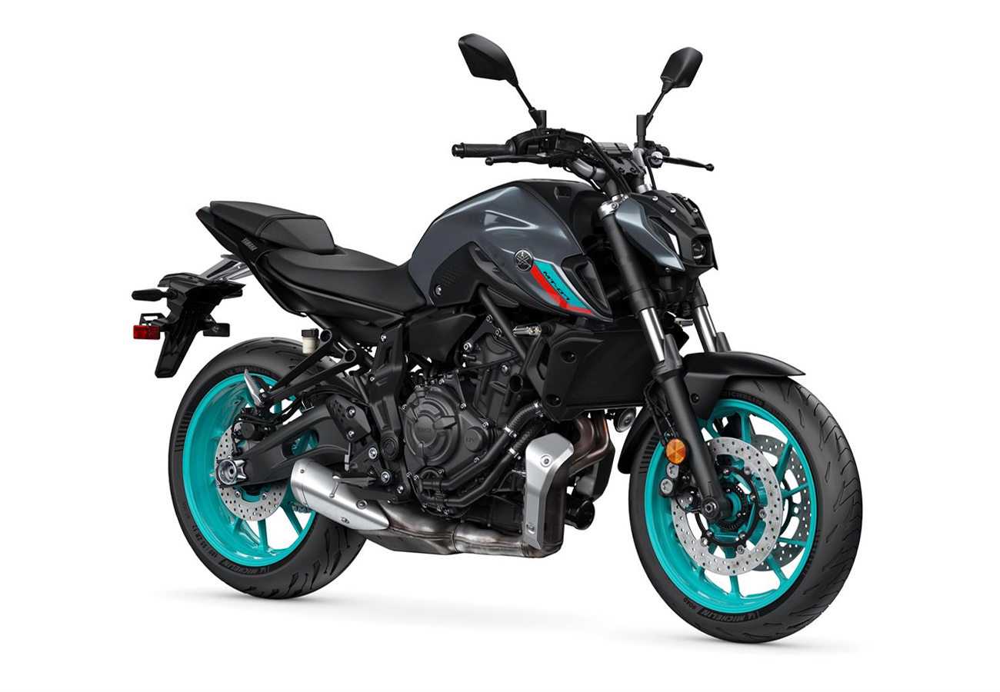

La Streetfighter es el resultado de la “Fight Formula”:
la Panigale V4 se despoja de sus carenados, con un
manillar alto y ancho, 178 kg en la escala, potenciada por un Desmosedici Stradale de 1100 cc y 208 hp que se
mantienen por las alas biplano y un paquete electrónico completo.
La moderna y tecnológica naked de Ducati ha
gozado de un gran éxito entre los motociclistas de todo el mindo, confirmado también por los comentarios positivos
de los medios internacionales.

En el siguiente video se muestra el funcionamiento de esta motocicleta
>Estilo que llama la atención con neumáticos gruesos y un tanque icónico peanut. Diseño con la emblemática postura tipo bulldog y un potente motor de 1200 cc con un par de torsión que domina las curvas.

En el siguiente video se muestra el funcionamiento de esta motocicleta
>Honda Japón tiene una larga tradición de artesanía cuya calidad es reconocida en todo el mundo. Esa artesanía ahora combina, armoniosamente, el elemento retro clásico con un estilo ultramoderno, dando lugar a una máquina diseñada con la máxima atención a los detalles junto con un rendimiento sin igual, la CB 650R. Estos fueron los factores clave que Honda consideró al emprender el viaje para desarrollar una nueva categoría de roadster deportivo. El objetivo fue transmitir emociones puras a los motociclistas que buscan un sentido de orgullo y que aman su motocicleta llevándola a su máximo potencial. Una nueva categoría desarrollada para motoqueros que anhelan el rendimiento y el estilo en un paquete sofisticado.

En el siguiente video se muestra el funcionamiento de esta motocicleta
>En las concurridas callejuelas urbanas, la Svartpilen 250 reina. Una ligera parte ciclo y una posición de pilotaje erguida proporcionan una visión dominante del tráfico, mientras que un potente motor y una veloz aceleración trabajan para dejar espacio entre ti y la ciudad. Sin embargo, cuando el camino se convierte en una cinta retorcida de curvas y rasantes, la Svartpilen 250 te recuerda que se trata de una motocicleta - y que ha sido creada precisamente para este entorno.

En el siguiente video se muestra el funcionamiento de esta motocicleta
>La Svartpilen 401 luce sin vergüenza un estilo más rudo. Se trata, por definición, de una moto que se siente como en casa en la periferia metropolitana, donde la capa de asfalto es menos que perfecta. Sacando partido de su ligero y contundente motor para navegar por las calles suburbanas, es maestra en sus dominios.

En el siguiente video se muestra el funcionamiento de esta motocicleta
>El suave tacto del quickshifter te anima a subir un poco más de vueltas el motor para subir de marcha. Disfrutando de su curva de par, de la confianza que ofrece para salir de las curvas. Es una experiencia de pilotaje marcada por su pureza y facilidad de uso. Pero cuando el poco tráfico te incite - cuando desees acoplarte sobre los manillares y limar los neumáticos, la SVARTPILEN 701 estará encantada de complacerle.

En el siguiente video se muestra el funcionamiento de esta motocicleta
>Asentada en lo más alto del reino del segmento hypernaked y con una intimidante colección de especificaciones de chasis y motor de altas prestaciones, así como con sistemas de asistencia al pilotaje y una electrónica de alto nivel, la KTM 1290 SUPER DUKE R no necesita de presentación. Pero se la haremos de todos modos. Presentamos a THE BEAST.
En el siguiente video se muestra el funcionamiento de esta motocicleta
>Introducida el año 2002, la Suzuki V-Strom 1050 amplió la popularidad de las motocicletas en la categoría de aventura. La Suzuki V-Strom 1050 fue ya más competente cuando debutó el 2014, empezando a ser adoptada por motociclistas experimentados de todo el mundo. Para volver a enfatizar el liderazgo de V-Strom en esta categoría, Suzuki Japón agrega nuevas tecnologías y experiencia práctica al nuevo modelo 2023 Suzuki V-Strom 1050. Este nueva Suzuki V-Strom 1050 tiene sistemas refinados para mantener el rendimiento del motor y una gran economía de combustible, al mismo tiempo que se logran estándares de emisiones en todo el mundo. Para enfatizar el legado de aventuras de Suzuki, el exterior de la Suzuki V-Strom 1050 ha sufrido una transformación que le da a la motocicleta un indicio de su linaje y una renovada llamada a la aventura.
En el siguiente video se muestra el funcionamiento de esta motocicleta
>La Yamaha R1 es una motocicleta o bien «superbike» de calle que sube el nivel en todos los aspectos: motor, electrónica, chasis, suspensiones, frenos, y diseño. Es una moto mucho más sofisticada aunque mantiene su potencia en 200 CV pese a haber recibido numerosas mejoras en su corazón de cuatro cilindros paralelos de 999 cc con diseño de cigüeñal crossplane. Esto supone volver a situarla al mejor nivel de la dura competencia en el segmento de las motos más deportivas que además cuentan con una clara herencia de MotoGP y WSBK. Potente motor con cigüeñal crossplane de 4 cilindros, multivalvular con 200 hp de potencia máxima. QSS (Quick Shifter Sistem) actualizado (Up and down). 4 modos de conducción personalizables y pantalla con opción de track mode.

En el siguiente video se muestra el funcionamiento de esta motocicleta
>El motor bicilíndrico en línea de 689 cc aprovecha el diseño "crossplane" para proporcionar un par motor completamente lineal y una contundente aceleración. Además, la MT-07 también cuenta con un chasis compacto y ligero que proporciona una excelente capacidad de maniobra y agilidad. Yamaha MT-07. Nunca ha habido una razón mejor para subirte y disfrutar.
En el siguiente video se muestra el funcionamiento de esta motocicleta
>| Marca | Modelo | Cilindrada | Tipo de moto | Fecha de inscripción | Más de un casco | Tengo guantes | Tengo chaqueta | Año del modelo | Experiencia | Opciones |
|---|